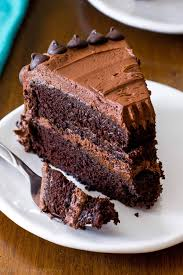

Chocolate Cakes

Easy to bake chocolate cakes recipe
Ingredients:
Cakes:
- 2 cups white sugar
- 1 3/4 cups all-purpose flour
- 3/4 cup unsweetened cocoa powder
- 1 1/2 teaspoons baking soda
- 1 1/2 teaspoons baking powder
- 1 teaspoon salt
- 2 lrge eggs
- 1 cup milk
- 1/2 cup vegetable oil
- 1 cup boiling water
Frosting:
- 3/4 cup unsalted butter, room temperature
- 5 1/3 cups confectioners' sugar
- 1 1/2 cups unsweetened cocoa powder
- 2/3 cup milk
- 1 teaspoon vanilla extract
Steps:
- Preheat the oven to 350 degrees F (175 degrees C). Beat butter, white sugar, and brown sugar with an electric mixer in a large bowl until smooth.
- Make cake: Stir together sugar, flour, cocoa, baking soda, baking powder, and salt in a bowl.
- Add eggs, milk, oil, and vanilla; mix for 3 minutes with an electric mixer. Stir in boiling water by hand.
- Pour evenly into the prepared pans.
- Bake in the preheated oven until a toothpick inserted into the centers comes out clean, 30 to 35 minutes. Cool for 10 minutes before removing
from pans to cool completely.
- While cakes cool, make frosting: Cream butter with an electric mixer until light and fluffy. Stir in confectioners' sugar and cocoa alternately
with milk and vanilla. Beat to a smooth spreading consistency.
- Split the layers of the cooled cake horizontally, cover the top of each layer with frosting, then stack them onto a serving plate.
- Frost the outside of the cake with the remaining frosting.
- Enjoy!